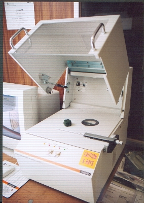

Empresa

Forpez (Española de Electrólisis, S.L.) es una empresa industrial especializada en recubrimientos galvánicos a bombo para la protección anticorrosiva y el tratamiento funcional de piezas metálicas. La compañía opera bajo su denominación actual desde 1980, acumulando más de 50 años de experiencia en el sector de los tratamientos de superficie, incluyendo etapas anteriores bajo otras razones sociales.
La actividad se desarrolla en instalaciones propias situadas en Montcada i Reixac (Barcelona), con una superficie aproximada de 2.200 m², donde se integran producción, laboratorio, oficina técnica y mantenimiento interno. Esta estructura permite un control directo del proceso, una elevada repetibilidad y una rápida adaptación a los requisitos técnicos de cada cliente.
Forpez opera con líneas automáticas de tratamiento y procesos diseñados para trabajo a bombo, con especial atención al seguimiento de parámetros críticos, la trazabilidad de los lotes y la coherencia del sistema completo de recubrimiento (proceso, pasivado y sellado).
Históricamente vinculada al sector de la automoción, la empresa presta actualmente servicio a distintos sectores industriales, manteniendo como eje central un enfoque técnico basado en fiabilidad de proceso, control interno y soporte a especificaciones de cliente.
Desde sus inicios, Forpez ha incorporado de forma progresiva sistemas de control de calidad, laboratorio propio y gestión medioambiental, entendidos no como certificaciones formales, sino como herramientas operativas orientadas a garantizar resultados consistentes en producción.
Zinc Electrolítico (ácido)

El zincado electrolítico ácido es uno de los procesos base en Forpez para la protección anticorrosiva de piezas de acero y hierro. Frente a otros sistemas, el zinc ácido ofrece mejor penetración en geometrías complejas, mayor ductilidad del depósito y un acabado más uniforme, lo que lo hace especialmente adecuado para piezas roscadas y componentes tratados a bombo.
Forpez dispone de una línea automática de zinc electrolítico ácido, equipada con 13 bombos y múltiples posiciones de tratamiento, con una capacidad productiva aproximada de 1.000 kg/hora, variable en función de los acabados aplicados. Este sistema permite trabajar a temperaturas superiores a la ambiente sin comprometer la adherencia ni la calidad del recubrimiento, aportando una mayor estabilidad del proceso frente a soluciones alcalinas en determinadas aplicaciones.
El control del proceso se basa en el seguimiento periódico de los componentes del baño, con análisis internos que garantizan la estabilidad de las concentraciones y la homogeneidad del depósito en producciones en serie. El ajuste de parámetros como concentración, pH y tiempo de inmersión permite adaptar el proceso a las necesidades específicas de cada referencia y a los requisitos técnicos del cliente.
Como acabados posteriores, el zinc electrolítico puede combinarse con pasivados trivalentes y con la aplicación de sellantes y/o lubricantes, tanto para mejorar la resistencia a la corrosión como para aportar propiedades funcionales adicionales, como el control del coeficiente de fricción.
Para piezas susceptibles de fragilización por hidrógeno, Forpez dispone de dos hornos de deshidrogenado con una capacidad total de hasta 4 toneladas, integrando el tratamiento térmico y el acabado final dentro del mismo flujo productivo.
Zinc-Níquel (Zn-Ni)


El zinc-níquel (Zn-Ni) es un proceso de deposición de aleación diseñado para aplicaciones con altas exigencias de resistencia a la corrosión y estabilidad térmica, siendo ampliamente utilizado en el sector de la automoción y en componentes sometidos a condiciones severas de servicio.
En Forpez se dispone de dos líneas diferenciadas de Zn-Ni, lo que permite seleccionar la tecnología más adecuada en función del tipo de pieza, geometría y especificación técnica.
Zn-Ni Alcalino (12–15 % Ni)
El Zn-Ni alcalino, con un contenido de níquel comprendido entre el 12 y el 15 %, es un proceso especialmente estable y robusto para producciones en serie. Permite obtener una aleación homogénea y una excelente uniformidad de espesor en toda la superficie de la pieza.
Esta línea dispone de 14 posiciones de baño, con una capacidad productiva aproximada de 900 kg/hora, garantizando estabilidad de proceso y repetibilidad en grandes volúmenes.
En combinación con el sistema de pasivado y sellado adecuados, el Zn-Ni alcalino permite superar las 2.000 horas en ensayos de cámara de niebla salina según DIN / ISO 9227, cumpliendo las especificaciones más exigentes del sector de automoción.
Zn-Ni Ácido (12–15 % Ni)
El Zn-Ni ácido, también con un contenido de níquel en el rango 12–15 %, se caracteriza por su excelente comportamiento en geometrías complejas y por su idoneidad para piezas de forja y piezas sinterizadas.
Este proceso destaca por su alto poder de penetración (throwing power), superior al 95 %, permitiendo una deposición eficaz y uniforme en zonas de difícil acceso.
Forpez dispone de una línea específica de Zn-Ni ácido con 10 posiciones de baño, con una capacidad productiva aproximada de 900 kg/hora, complementando al sistema alcalino y ampliando el abanico de soluciones técnicas disponibles.
Acabados y prestaciones
Ambos sistemas pueden combinarse con pasivados trivalentes en acabados negro, transparente y azulado, así como con la aplicación de sellantes y/o lubricantes, en función de los requisitos de resistencia a la corrosión y control del coeficiente de fricción.
El seguimiento del proceso se realiza de forma continua, asegurando la uniformidad del contenido de níquel, la coherencia del aspecto final y la estabilidad de resultados entre lotes.
Sellantes y Lubricantes
Los sellantes y lubricantes forman parte esencial del sistema completo de recubrimiento, actuando como complemento del proceso base y del pasivado para mejorar las prestaciones finales de las piezas tratadas.
Forpez dispone de una línea automática específica para la aplicación de sellantes y/o lubricantes, con una capacidad de hasta 2 toneladas por hora, garantizando una aplicación uniforme, repetible y plenamente integrada en procesos de producción industrial.
Estos tratamientos permiten incrementar la resistencia a la corrosión, mejorar la estabilidad del sistema y, cuando es necesario, controlar el coeficiente de fricción, adaptando el recubrimiento a requisitos técnicos específicos.
Actualmente se trabaja con productos de los principales fabricantes del mercado, como MacDermid, Atotech y Coventya, permitiendo cumplir especificaciones concretas de cliente sin dependencia de una única tecnología.
Zinc Mecánico

El zinc mecánico es un proceso de recubrimiento metálico especialmente indicado para piezas de acero endurecido y componentes donde la fragilización por hidrógeno representa un riesgo crítico. A diferencia de los procesos electrolíticos, este sistema elimina completamente dicho riesgo, al no generar hidrógeno durante la deposición.
Permite aplicar altos espesores de recubrimiento, pudiendo superar las 50 micras, con una deposición uniforme y sin necesidad de tratamientos térmicos posteriores de deshidrogenado.
El proceso se realiza conforme a la norma DIN EN ISO 12683, referencia para este tipo de recubrimientos en aplicaciones industriales y de automoción.
Forpez dispone de una línea de zinc mecánico con una capacidad productiva aproximada de 4.000 kg diarios, orientada a producciones industriales estables. El proceso admite pasivados trivalentes, así como sellantes y/o lubricantes, en función de la aplicación final.
Medio Ambiente

En Forpez, la gestión medioambiental forma parte integrante del funcionamiento de la planta y del control de los procesos productivos.
La empresa dispone de una depuradora físico-química propia, operativa desde 1994, destinada al tratamiento de las aguas residuales generadas en los procesos productivos.
Forpez ha eliminado completamente el uso de cromo hexavalente, trabajando exclusivamente con sistemas basados en cromo trivalente, en adecuación a la legislación vigente y a los requisitos del sector industrial.
Asimismo, se aplican medidas orientadas a la reducción de residuos, la optimización del consumo de agua y energía, y el control de vertidos, integrando estos aspectos dentro del control global de los procesos productivos.
Calidad · Laboratorio · Ensayos


Forpez opera bajo un sistema de gestión de la calidad certificado según ISO 9001, aplicado de forma operativa al control de procesos, seguimiento de producción y verificación del resultado final.
Las líneas de tratamiento a bombo están totalmente automatizadas y gestionadas mediante un sistema SCADA, que permite un seguimiento completo de parámetros y la trazabilidad de cada lote, asegurando repetibilidad y coherencia en producción.
La empresa dispone de laboratorio propio para el control químico periódico de baños y pasivados, así como de equipos de medición de espesor por rayos X, capaces de verificar recubrimientos incluso en zonas críticas como pasos de rosca. Pueden emitirse certificados de espesor asociados a cada partida.
Asimismo, se realizan ensayos de corrosión en cámara de niebla salina según DIN / ISO 9227, validando el comportamiento del sistema completo de recubrimiento.
Sectores
Forpez presta servicio a clientes con exigencias técnicas elevadas, adaptando sus procesos a los requisitos específicos de cada sector:
- Automoción
- Industria
- Construcción
- Renovables
Contacto
Si necesita validar un requisito técnico, una norma aplicable o seleccionar el sistema de recubrimiento más adecuado, puede contactar con nuestro equipo.
Forpez (Española de Electrólisis, S.L.)
Polígono Industrial La Ferrería – Metal 2
08110 Montcada i Reixac (Barcelona)
Teléfono: +34 93 575 21 95
Correo: info@forpez.com
La web incorporará un formulario de contacto técnico, cuyos mensajes se enviarán a una dirección interna no visible, independiente del correo público.